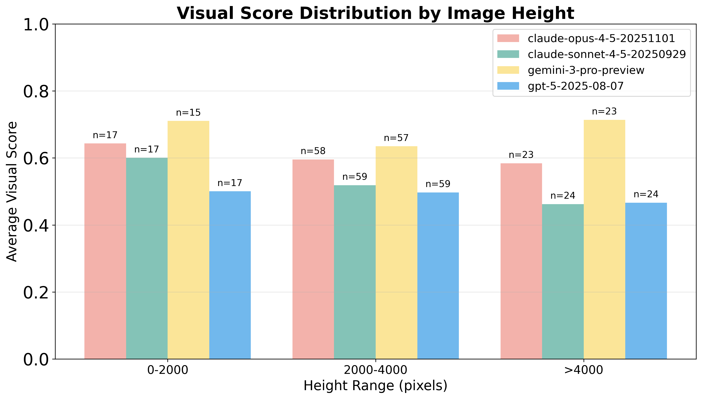
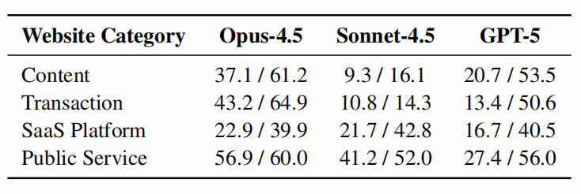
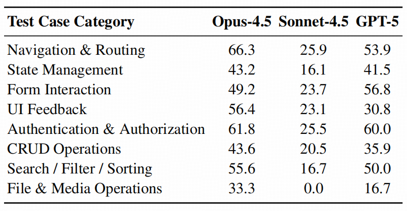

VisionWebDev
VisionWebDev
Recent advances in large language models have improved the capabilities of coding agents, yet systematic evaluation of complex, end-to-end website development remains limited. Prominent benchmarks such as SWE-Bench focus on incremental, issue-driven edits, failing to evaluate holistic end-to-end engineering. Although recent text-only benchmarks explore full development scenarios, multimodal evaluation remains largely confined to static webpage reproduction. Moreover, assessing complex interactions and long-horizon outcomes is still difficult due to underspecified tasks and weak verification protocols. To address these gaps, we introduce VisionWebDev, a hierarchical benchmark that enables autonomous evaluation of multimodal coding agents on visual website development via agent verification. As a task formulation, website development naturally spans the full software lifecycle and requires coordinated understanding of visual prototypes, textual requirements, and codebases, making it an ideal testbed for evaluating long-horizon multimodal agent intelligence. The benchmark is constructed from real-world websites through a rigorous multi-stage pipeline and comprises 193 tasks across 16 categories, with 918 prototype images and 1,256 test cases. To support flexible, thorough and reliable evaluation, we propose a workflow-based agent verification paradigm combining GUI agent verifiers with VLM-based judges. Our evaluation reveals substantial performance gaps at all task levels, with state-of-the-art models still struggling on full-stack development.

| Reset | Level 1: Static Webpage | Level 2: Interactive Frontend | Level 3: Full-Stack Website | |||||||||||
|---|---|---|---|---|---|---|---|---|---|---|---|---|---|---|
| # | Model + Framework | Params | Date | Overall | Desktop | Tablet | Mobile | Avg | VS | FS | Avg | VS | FS | Avg |

VisionWebDev addresses key limitations of existing benchmarks. Unlike SWE-Bench which focuses on incremental code edits, or Design2Code which is limited to static UI reproduction, VisionWebDev provides comprehensive evaluation spanning the full software development lifecycle with multimodal inputs, hierarchical task formulation, and rigorous automated verification.
Visual website development encompasses a range of capabilities, from interpreting UI prototypes to managing interaction-driven application states and page transitions. To systematically evaluate these competencies, VisionWebDev formalizes coding tasks via a three-level hierarchical framework:

All tasks include comprehensive multimodal input materials: high-fidelity UI prototypes across multiple devices, textual requirement specifications detailing functionality and interactions, and a multimedia resource library with images, icons, videos and fonts to simulate realistic development environments.


VisionWebDev comprises 193 tasks spanning 16 subcategories across 4 major domains, ensuring diverse coverage of real-world web applications. Task complexity increases progressively across three levels: 100 static webpage tasks (averaging 3 prototypes per task), 66 interactive frontend tasks (5.9 prototypes and 7.5 test cases), and 27 full-stack website tasks (8.5 prototypes and 28.2 test cases). The benchmark includes 1,256 test cases distributed across levels for comprehensive functional verification.
End-to-end website evaluation presents significant challenges for both functional and visual testing. To address these challenges, VisionWebDev adopts a workflow-based agent verification paradigm that preserves the flexibility of agent-based interaction while constraining execution through structured test workflows to achieve reproducibility.
VisionWebDev formalizes end-to-end testing as a directed dependency graph, where each node represents a self-contained verification sub-procedure and edges encode sequential dependencies. Test workflows are constructed following two principled guidelines: (1) Decoupling dependent test nodes to mitigate error propagation along long interaction chains, and (2) Integrating related test nodes operating within the same application context to reduce redundant setup while enabling coherent verification.
VisionWebDev explicitly categorizes verification nodes into two complementary types:
Employing VisionWebDev, we evaluate state-of-the-art multimodal models across coding agent frameworks and task levels to reveal their limitations in visual website development.




@article{he2026visionwebdev,
title={VisionWebDev: A Hierarchical Benchmark for Visual Website Development with Agent Verification},
author={He, Zehai and Hong, Wenyi and Yang, Zhen and Pan, Ziyang and Liu, Mingdao and Gu, Xiaotao and Tang, Jie},
journal={arXiv preprint},
year={2026}
}